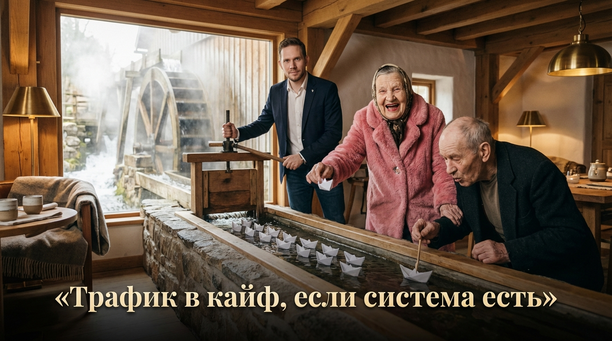
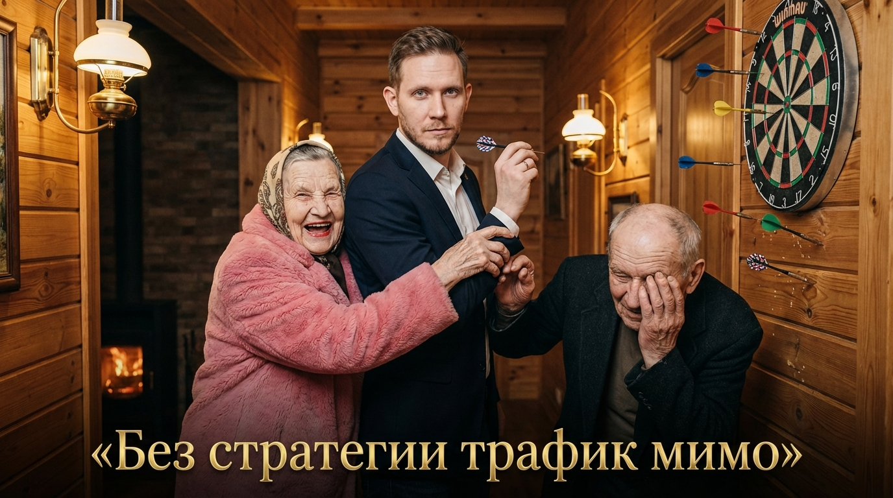
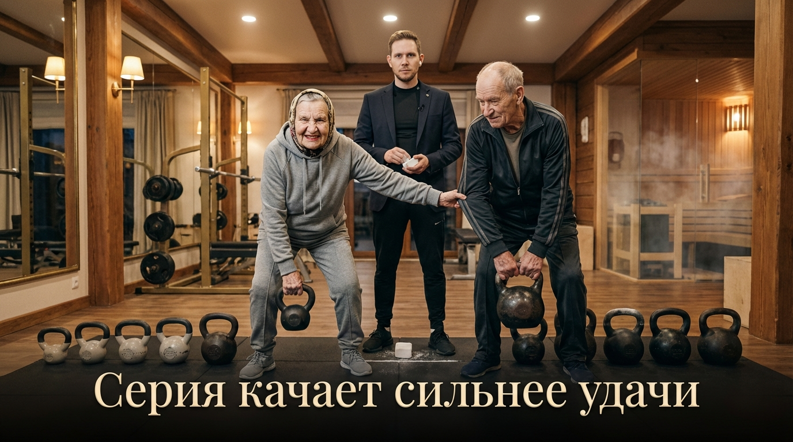
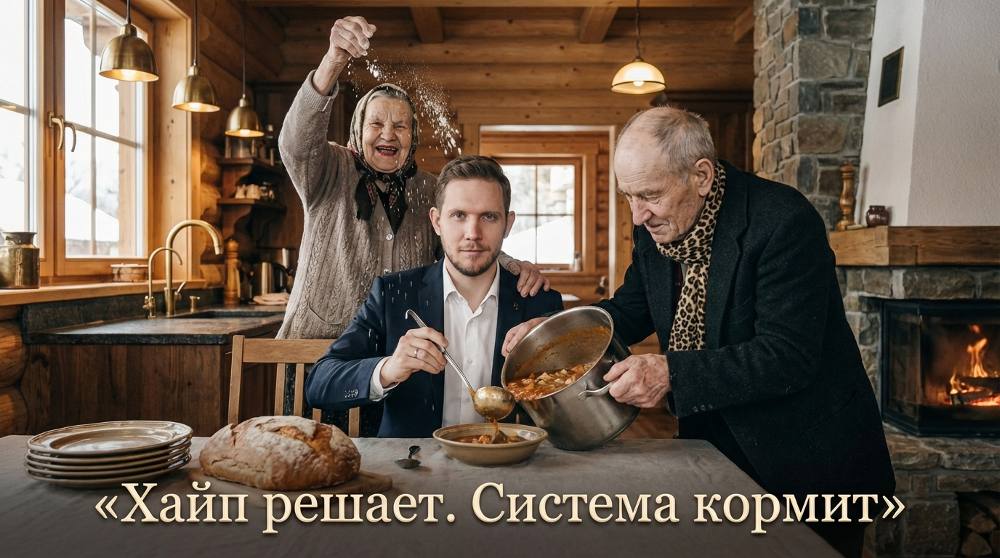
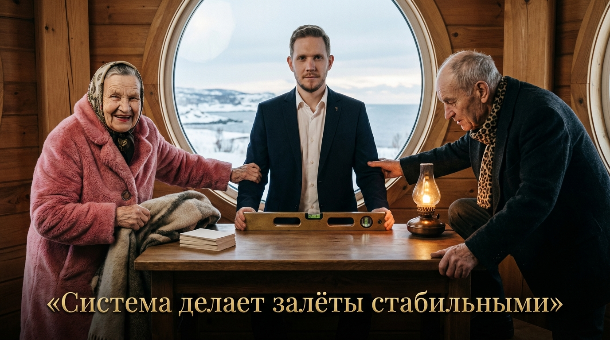

ROUTE 01 / OWN PROJECT

СВОЙ
ПРОЕКТ.
Бизнес, услуга, Telegram-канал, продукт, приложение, обучение, магазин. Охват становится внешним источником трафика.

AI-видео создают внимание. Дальше это внимание должно работать: на твой проект, продукт, канал, услугу или партнёрский оффер.
Управлять вниманием ↘Не один красивый ролик. Серия контента, которая постоянно встречает новую аудиторию.






Я не учу «делать красивые ролики». Мы строим систему, где контент получает внимание и ведёт человека дальше по понятной логике.
Бизнес, услуга, Telegram-канал, продукт, приложение, обучение, магазин. Охват становится внешним источником трафика.

Если своего продукта нет, внимание можно направлять на подходящие аудитории партнёрские программы и монетизировать через конверсии.
Определяем аудиторию, цель и действие после просмотра.
Создаём AI-контент быстро и тестируем разные механики, а не ставим всё на один ролик.
Смотрим удержание, пересылки, переходы, клики и конечные действия.
Усиливаем то, что приводит нужную аудиторию и даёт результат дальше по воронке.
просмотров на AI-контенте и 50 000+ подписчиков
Сначала смотрим твою ситуацию: что уже есть, какая аудитория нужна и куда логично вести трафик.
Свой проект или партнёрская модель. Контент подбирается под конечное действие, а не ради охвата как самоцели.
Практика строится вокруг реальных публикаций, а не вокруг просмотра теории.
Практическое обучение
Индивидуально разбираем задачу, строим контент-систему и маршрут трафика. Без обещаний «миллионов за неделю» и без искусственного дефицита.